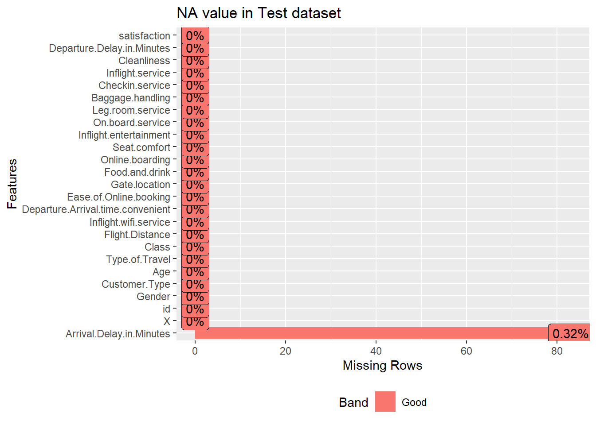
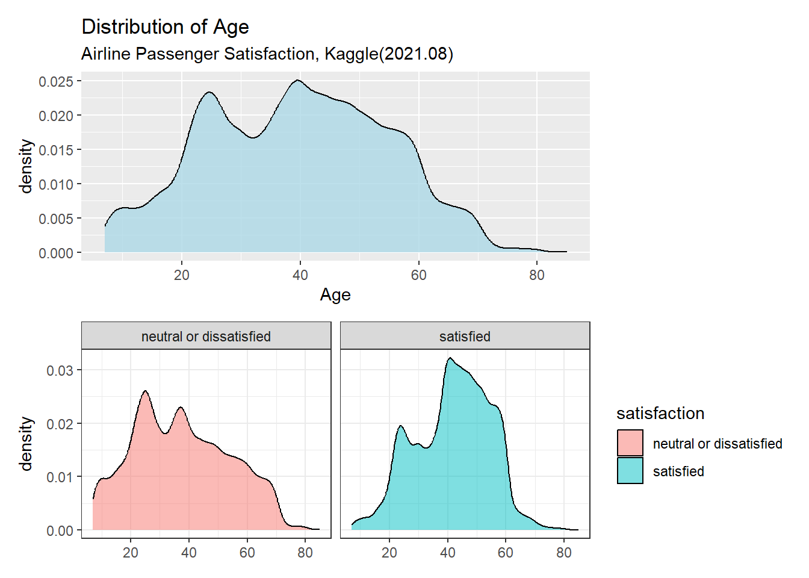
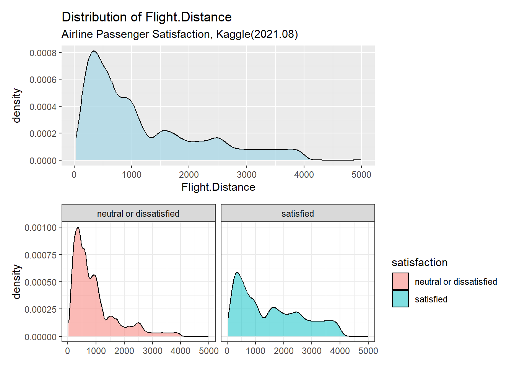
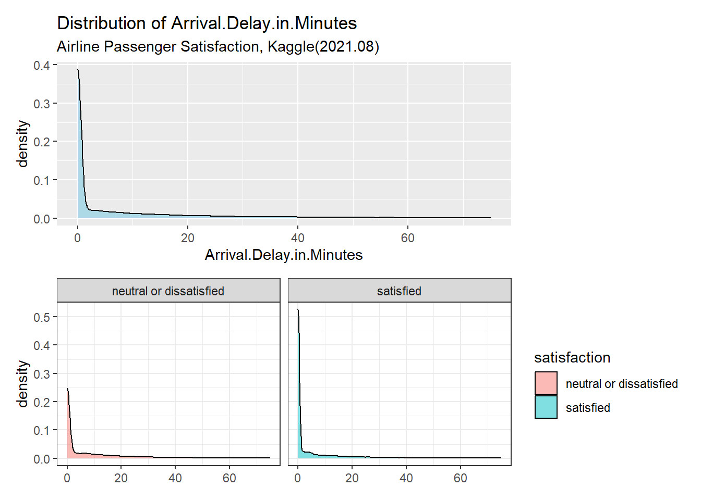
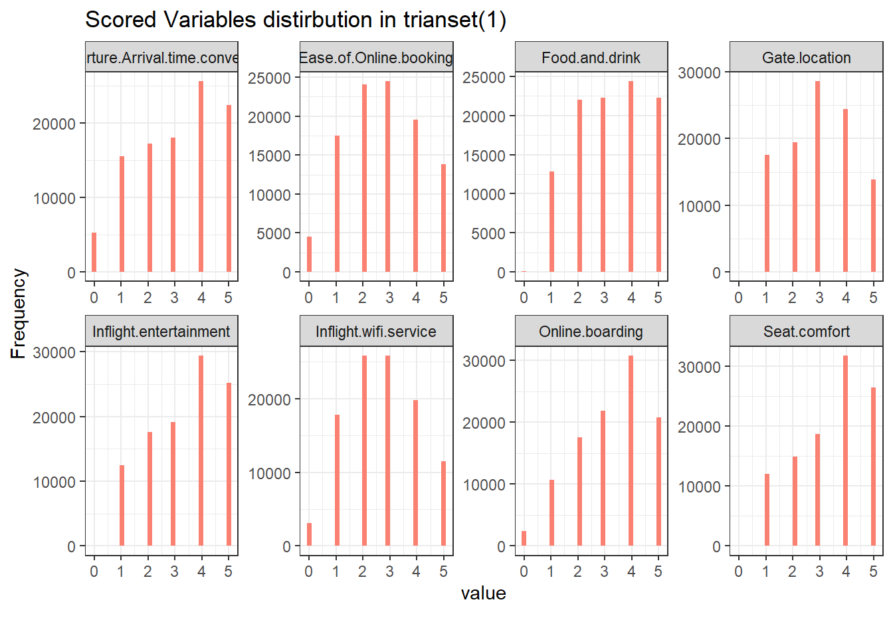
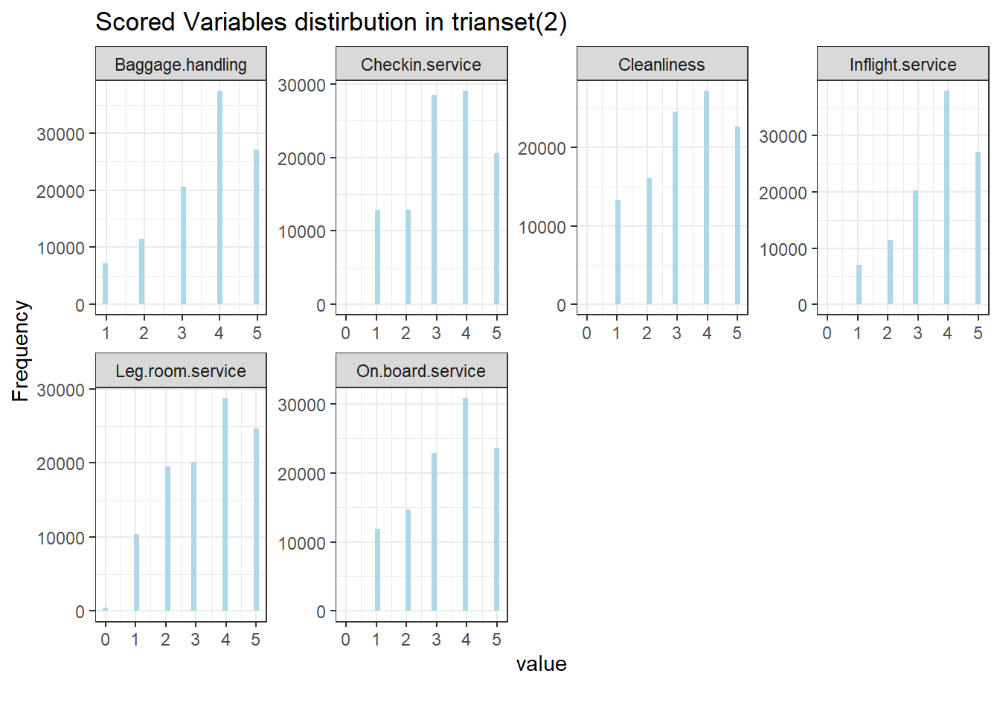
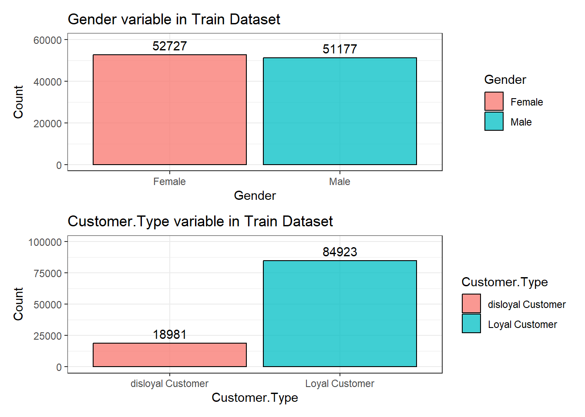
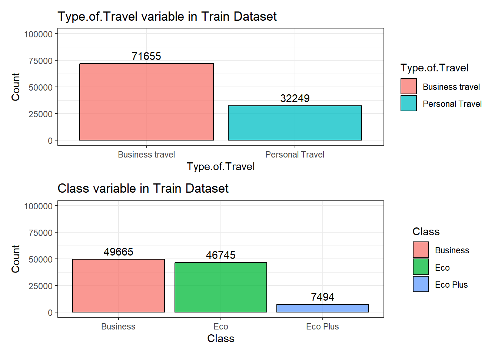
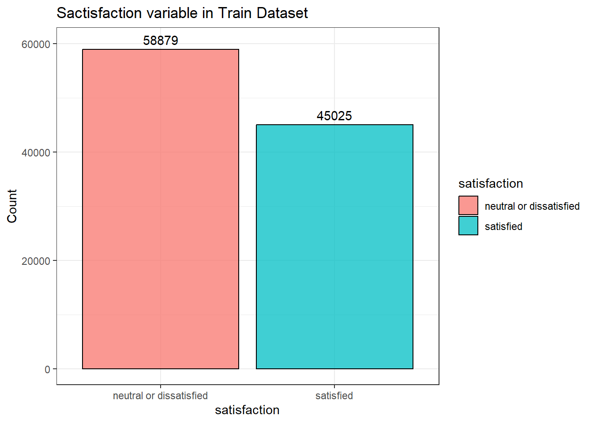
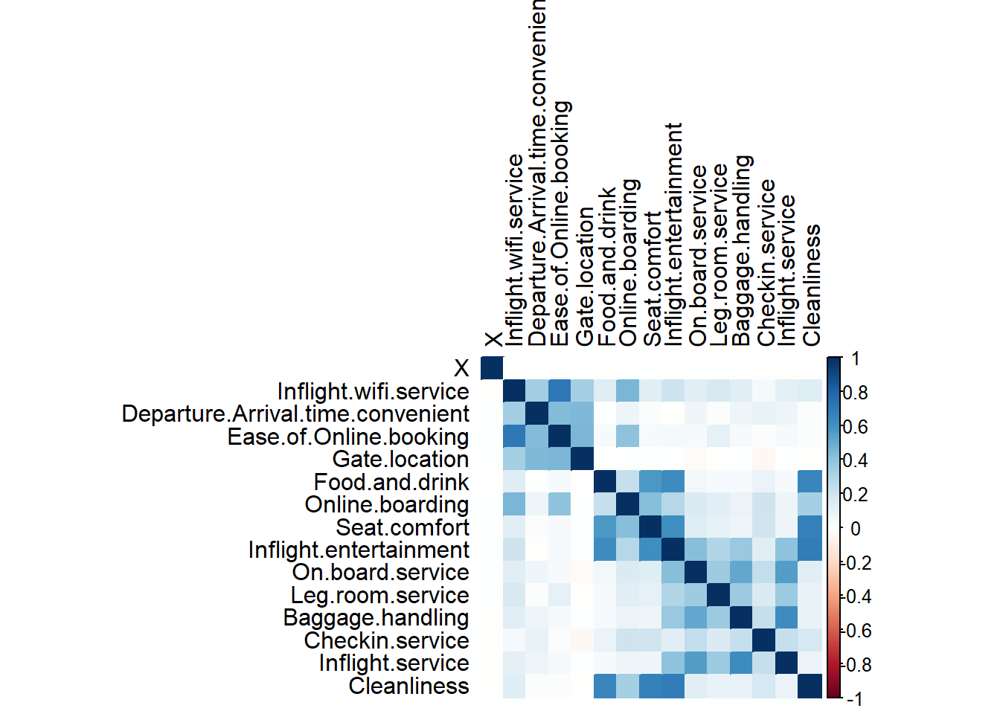

EDA
2023-04-18
Chapter 1 Proposal
1.1 The data:
Airline Passenger Satisfaction from kaggle https://www.kaggle.com/datasets/teejmahal20/airline-passenger-satisfaction
Variables: Gender: Gender of the passengers (Female, Male)
Customer Type: The customer type (Loyal customer, disloyal customer)
Age: The actual age of the passengers
Type of Travel: Purpose of the flight of the passengers (Personal Travel, Business Travel)
Class: Travel class in the plane of the passengers (Business, Eco, Eco Plus)
Flight distance: The flight distance of this journey
Inflight wifi service: Satisfaction level of the inflight wifi service (0:Not Applicable;1-5)
Departure/Arrival time convenient: Satisfaction level of Departure/Arrival time convenient
Ease of Online booking: Satisfaction level of online booking
Gate location: Satisfaction level of Gate location
Food and drink: Satisfaction level of Food and drink
Online boarding: Satisfaction level of online boarding
Seat comfort: Satisfaction level of Seat comfort
Inflight entertainment: Satisfaction level of inflight entertainment
On-board service: Satisfaction level of On-board service
Leg room service: Satisfaction level of Leg room service
Baggage handling: Satisfaction level of baggage handling
Check-in service: Satisfaction level of Check-in service
Inflight service: Satisfaction level of inflight service
Cleanliness: Satisfaction level of Cleanliness
Departure Delay in Minutes: Minutes delayed when departure
Arrival Delay in Minutes: Minutes delayed when Arrival
Satisfaction: Airline satisfaction level(Satisfaction, neutral or dissatisfaction)
1.2 Modeling goal:
This dataset contains an airline passenger satisfaction survey.We want to know what factors are highly correlated to a satisfied (or dissatisfied) passenger, and try to model and predict passenger satisfaction.
1.3 The models we intend to use:
random forest(white box), lightGBM(black box), KNN(black box), logistic regression(white box)
# Data science
library(tidyverse)
library(DataExplorer)
library(skimr)
library(lubridate)
# Modeling
library(tidymodels)
library(caret)
# Visualization
library(ggrepel)
library(GGally)
library(vip)
library(patchwork)
library(ggplot2)
library(corrplot)
# Tables
library(gt)train <- read.csv("train.csv",stringsAsFactors = F)
test <- read.csv("test.csv",stringsAsFactors = F)
options(scipen=999) # erase 'e' in number
options(warn = -1)# Train data
plot_missing(train,title='NA value in Train dataset')#Test data
plot_missing(test,title='NA value in Test dataset')
miceresult <- mice::mice(train,seed=123,m=5)#the m is the number of divide##
## iter imp variable
## 1 1 Arrival.Delay.in.Minutes
## 1 2 Arrival.Delay.in.Minutes
## 1 3 Arrival.Delay.in.Minutes
## 1 4 Arrival.Delay.in.Minutes
## 1 5 Arrival.Delay.in.Minutes
## 2 1 Arrival.Delay.in.Minutes
## 2 2 Arrival.Delay.in.Minutes
## 2 3 Arrival.Delay.in.Minutes
## 2 4 Arrival.Delay.in.Minutes
## 2 5 Arrival.Delay.in.Minutes
## 3 1 Arrival.Delay.in.Minutes
## 3 2 Arrival.Delay.in.Minutes
## 3 3 Arrival.Delay.in.Minutes
## 3 4 Arrival.Delay.in.Minutes
## 3 5 Arrival.Delay.in.Minutes
## 4 1 Arrival.Delay.in.Minutes
## 4 2 Arrival.Delay.in.Minutes
## 4 3 Arrival.Delay.in.Minutes
## 4 4 Arrival.Delay.in.Minutes
## 4 5 Arrival.Delay.in.Minutes
## 5 1 Arrival.Delay.in.Minutes
## 5 2 Arrival.Delay.in.Minutes
## 5 3 Arrival.Delay.in.Minutes
## 5 4 Arrival.Delay.in.Minutes
## 5 5 Arrival.Delay.in.Minutesmiceresult## Class: mids
## Number of multiple imputations: 5
## Imputation methods:
## X id
## "" ""
## Gender Customer.Type
## "" ""
## Age Type.of.Travel
## "" ""
## Class Flight.Distance
## "" ""
## Inflight.wifi.service Departure.Arrival.time.convenient
## "" ""
## Ease.of.Online.booking Gate.location
## "" ""
## Food.and.drink Online.boarding
## "" ""
## Seat.comfort Inflight.entertainment
## "" ""
## On.board.service Leg.room.service
## "" ""
## Baggage.handling Checkin.service
## "" ""
## Inflight.service Cleanliness
## "" ""
## Departure.Delay.in.Minutes Arrival.Delay.in.Minutes
## "" "pmm"
## satisfaction
## ""
## PredictorMatrix:
## X id Gender Customer.Type Age Type.of.Travel Class
## X 0 1 0 0 1 0 0
## id 1 0 0 0 1 0 0
## Gender 1 1 0 0 1 0 0
## Customer.Type 1 1 0 0 1 0 0
## Age 1 1 0 0 0 0 0
## Type.of.Travel 1 1 0 0 1 0 0
## Flight.Distance Inflight.wifi.service
## X 1 1
## id 1 1
## Gender 1 1
## Customer.Type 1 1
## Age 1 1
## Type.of.Travel 1 1
## Departure.Arrival.time.convenient Ease.of.Online.booking
## X 1 1
## id 1 1
## Gender 1 1
## Customer.Type 1 1
## Age 1 1
## Type.of.Travel 1 1
## Gate.location Food.and.drink Online.boarding Seat.comfort
## X 1 1 1 1
## id 1 1 1 1
## Gender 1 1 1 1
## Customer.Type 1 1 1 1
## Age 1 1 1 1
## Type.of.Travel 1 1 1 1
## Inflight.entertainment On.board.service Leg.room.service
## X 1 1 1
## id 1 1 1
## Gender 1 1 1
## Customer.Type 1 1 1
## Age 1 1 1
## Type.of.Travel 1 1 1
## Baggage.handling Checkin.service Inflight.service Cleanliness
## X 1 1 1 1
## id 1 1 1 1
## Gender 1 1 1 1
## Customer.Type 1 1 1 1
## Age 1 1 1 1
## Type.of.Travel 1 1 1 1
## Departure.Delay.in.Minutes Arrival.Delay.in.Minutes satisfaction
## X 1 1 0
## id 1 1 0
## Gender 1 1 0
## Customer.Type 1 1 0
## Age 1 1 0
## Type.of.Travel 1 1 0
## Number of logged events: 5
## it im dep meth out
## 1 0 0 constant Gender
## 2 0 0 constant Customer.Type
## 3 0 0 constant Type.of.Travel
## 4 0 0 constant Class
## 5 0 0 constant satisfactiontrain <- mice::complete(miceresult,1) #remove the missing values in the train set
miceresult <- mice::mice(test,seed=123,m=5)##
## iter imp variable
## 1 1 Arrival.Delay.in.Minutes
## 1 2 Arrival.Delay.in.Minutes
## 1 3 Arrival.Delay.in.Minutes
## 1 4 Arrival.Delay.in.Minutes
## 1 5 Arrival.Delay.in.Minutes
## 2 1 Arrival.Delay.in.Minutes
## 2 2 Arrival.Delay.in.Minutes
## 2 3 Arrival.Delay.in.Minutes
## 2 4 Arrival.Delay.in.Minutes
## 2 5 Arrival.Delay.in.Minutes
## 3 1 Arrival.Delay.in.Minutes
## 3 2 Arrival.Delay.in.Minutes
## 3 3 Arrival.Delay.in.Minutes
## 3 4 Arrival.Delay.in.Minutes
## 3 5 Arrival.Delay.in.Minutes
## 4 1 Arrival.Delay.in.Minutes
## 4 2 Arrival.Delay.in.Minutes
## 4 3 Arrival.Delay.in.Minutes
## 4 4 Arrival.Delay.in.Minutes
## 4 5 Arrival.Delay.in.Minutes
## 5 1 Arrival.Delay.in.Minutes
## 5 2 Arrival.Delay.in.Minutes
## 5 3 Arrival.Delay.in.Minutes
## 5 4 Arrival.Delay.in.Minutes
## 5 5 Arrival.Delay.in.Minutesmiceresult## Class: mids
## Number of multiple imputations: 5
## Imputation methods:
## X id
## "" ""
## Gender Customer.Type
## "" ""
## Age Type.of.Travel
## "" ""
## Class Flight.Distance
## "" ""
## Inflight.wifi.service Departure.Arrival.time.convenient
## "" ""
## Ease.of.Online.booking Gate.location
## "" ""
## Food.and.drink Online.boarding
## "" ""
## Seat.comfort Inflight.entertainment
## "" ""
## On.board.service Leg.room.service
## "" ""
## Baggage.handling Checkin.service
## "" ""
## Inflight.service Cleanliness
## "" ""
## Departure.Delay.in.Minutes Arrival.Delay.in.Minutes
## "" "pmm"
## satisfaction
## ""
## PredictorMatrix:
## X id Gender Customer.Type Age Type.of.Travel Class
## X 0 1 0 0 1 0 0
## id 1 0 0 0 1 0 0
## Gender 1 1 0 0 1 0 0
## Customer.Type 1 1 0 0 1 0 0
## Age 1 1 0 0 0 0 0
## Type.of.Travel 1 1 0 0 1 0 0
## Flight.Distance Inflight.wifi.service
## X 1 1
## id 1 1
## Gender 1 1
## Customer.Type 1 1
## Age 1 1
## Type.of.Travel 1 1
## Departure.Arrival.time.convenient Ease.of.Online.booking
## X 1 1
## id 1 1
## Gender 1 1
## Customer.Type 1 1
## Age 1 1
## Type.of.Travel 1 1
## Gate.location Food.and.drink Online.boarding Seat.comfort
## X 1 1 1 1
## id 1 1 1 1
## Gender 1 1 1 1
## Customer.Type 1 1 1 1
## Age 1 1 1 1
## Type.of.Travel 1 1 1 1
## Inflight.entertainment On.board.service Leg.room.service
## X 1 1 1
## id 1 1 1
## Gender 1 1 1
## Customer.Type 1 1 1
## Age 1 1 1
## Type.of.Travel 1 1 1
## Baggage.handling Checkin.service Inflight.service Cleanliness
## X 1 1 1 1
## id 1 1 1 1
## Gender 1 1 1 1
## Customer.Type 1 1 1 1
## Age 1 1 1 1
## Type.of.Travel 1 1 1 1
## Departure.Delay.in.Minutes Arrival.Delay.in.Minutes satisfaction
## X 1 1 0
## id 1 1 0
## Gender 1 1 0
## Customer.Type 1 1 0
## Age 1 1 0
## Type.of.Travel 1 1 0
## Number of logged events: 5
## it im dep meth out
## 1 0 0 constant Gender
## 2 0 0 constant Customer.Type
## 3 0 0 constant Type.of.Travel
## 4 0 0 constant Class
## 5 0 0 constant satisfactiontest <- mice::complete(miceresult,1)#remove the missing values in the test setage1<- ggplot(data = train, aes( x = Age)) +
geom_density(fill="lightblue", color="black", alpha=0.8) +
labs(title = "Distribution of Age",
subtitle = "Airline Passenger Satisfaction, Kaggle(2021.08)")
age2 <- train %>%
mutate(satisfaction = recode(satisfaction, `0` = "neutral or dissatisfied", `1` = "satisfied")) %>%
ggplot(aes(x = Age, fill = satisfaction)) +
geom_density(alpha = 0.5) +
labs(x = NULL) +
theme_bw() +
facet_wrap(~satisfaction)
age1/age2
#flight distance histogram
flight1<- ggplot(data = train, aes( x = Flight.Distance)) +
geom_density(fill="lightblue", color="black", alpha=0.8) +
labs(title = "Distribution of Flight.Distance",
subtitle = "Airline Passenger Satisfaction, Kaggle(2021.08)")
flight2 <- train %>%
mutate(satisfaction = recode(satisfaction, `0` = "neutral or dissatisfied", `1` = "satisfied")) %>%
ggplot(aes(x = Flight.Distance, fill = satisfaction)) +
geom_density(alpha = 0.5) +
labs(x = NULL) +
theme_bw() +
facet_wrap(~satisfaction)
flight1/flight2
#Arrival.Delay.in.Minutes
arrive1<- ggplot(data = train, aes( x = Arrival.Delay.in.Minutes)) +
geom_density(fill="lightblue") +
xlim(0, 75) +
labs(title = "Distribution of Arrival.Delay.in.Minutes",
subtitle = "Airline Passenger Satisfaction, Kaggle(2021.08)")
arrive2 <- train %>%
mutate(satisfaction = recode(satisfaction, `0` = "neutral or dissatisfied", `1` = "satisfied")) %>%
ggplot(aes(x = Arrival.Delay.in.Minutes, fill = satisfaction)) +
geom_density(alpha = 0.5) +
xlim(0, 75) +
labs(x = NULL) +
theme_bw() +
facet_wrap(~satisfaction)
arrive1/arrive2
#Departure.Delay.in.Minutes
depart1<- ggplot(data = train, aes( x = Departure.Delay.in.Minutes)) +
geom_density(fill="lightblue") +
xlim(0, 75) +
labs(title = "Distribution of Departure.Delay.in.Minutes",
subtitle = "Airline Passenger Satisfaction, Kaggle(2021.08)")
depart2 <- train %>%
mutate(satisfaction = recode(satisfaction, `0` = "neutral or dissatisfied", `1` = "satisfied")) %>%
ggplot(aes(x = Departure.Delay.in.Minutes, fill = satisfaction)) +
geom_density(alpha = 0.5) +
xlim(0, 75) +
labs(x = NULL) +
theme_bw() +
facet_wrap(~satisfaction)
depart1/depart2#Check the distribution of numerical featurestrain %>%
dplyr::select(,9:16) %>%
plot_histogram(theme_config = theme_bw(),
geom_histogram_args = list(fill = "salmon"),title = "Scored Variables distirbution in trianset(1)")
train %>%
dplyr::select(,17:22) %>%
plot_histogram(theme_config = theme_bw(),
geom_histogram_args = list(fill = "lightblue"),title = "Scored Variables distirbution in trianset(2)")
#Check distribution of the score variables. Those are more categorical than numericalc5 <- train %>%
mutate(satisfaction = recode(satisfaction, `0` = "neutral or dissatisfied", `1` = "satisfied")) %>%
count(satisfaction) %>%
ggplot(aes(x = satisfaction, y = n, fill = satisfaction)) +
geom_bar(stat = "identity", colour = "black", alpha = 0.75) +
geom_text(aes(label = n), position=position_dodge(width=0.9), vjust=-0.5) +
ylim(0, 60000) +
labs(y = "Count") +
theme_bw() + ggtitle("Sactisfaction variable in Train Dataset")
c1 <-train %>%
mutate(Gender = recode(Gender, `0` = "Female", `1` = "Male")) %>%
count(Gender) %>%
ggplot(aes(x = Gender, y = n, fill = Gender)) +
geom_bar(stat = "identity", colour = "black", alpha = 0.75) +
geom_text(aes(label = n), position=position_dodge(width=0.9), vjust=-0.5) +
ylim(0, 60000) +
labs(y = "Count") +
theme_bw() + ggtitle("Gender variable in Train Dataset")
c2 <- train %>%
mutate(Customer.Type = recode(Customer.Type, `0` = "disloyal Customer", `1` = "Loyal Customer")) %>%
count(Customer.Type) %>%
ggplot(aes(x = Customer.Type, y = n, fill = Customer.Type)) +
geom_bar(stat = "identity", colour = "black", alpha = 0.75) +
geom_text(aes(label = n), position=position_dodge(width=0.9), vjust=-0.5) +
ylim(0, 100000) +
labs(y = "Count") +
theme_bw() + ggtitle("Customer.Type variable in Train Dataset")
c3 <- train %>%
mutate(Type.of.Travel = recode(Type.of.Travel, `0` = "Business travel", `1` = "Personal Travel")) %>%
count(Type.of.Travel) %>%
ggplot(aes(x = Type.of.Travel, y = n, fill = Type.of.Travel)) +
geom_bar(stat = "identity", colour = "black", alpha = 0.75) +
geom_text(aes(label = n), position=position_dodge(width=0.9), vjust=-0.5) +
ylim(0, 100000) +
labs(y = "Count") +
theme_bw() + ggtitle("Type.of.Travel variable in Train Dataset")
c4 <- train %>%
mutate(Class = recode(Class, `0` = "Business", `1` = "Eco",`2` = "Eco Plus")) %>%
count(Class) %>%
ggplot(aes(x = Class, y = n, fill = Class)) +
geom_bar(stat = "identity", colour = "black", alpha = 0.75) +
geom_text(aes(label = n), position=position_dodge(width=0.9), vjust=-0.5) +
ylim(0, 100000) +
labs(y = "Count") +
theme_bw() + ggtitle("Class variable in Train Dataset")
c1/c2
c3/c4
c5
#Here we display histogram to demonstrate distribution of character variables. We find that the genders of customers are quite balanced. Majority of the travels are business travels. There are more neutral or dissatisfied reviews than satisfied, but not by a large margin. #Correlation matrix
df_cor2 <- cor(select_if(subset(train, select=-c(id, Age, Flight.Distance,Departure.Delay.in.Minutes,Arrival.Delay.in.Minutes)), is.numeric))
summary(df_cor2)## X Inflight.wifi.service Departure.Arrival.time.convenient
## Min. :-0.0043215 Min. :-0.00249 Min. :-0.004861
## 1st Qu.:-0.0008216 1st Qu.: 0.12121 1st Qu.: 0.011893
## Median : 0.0007393 Median : 0.13472 Median : 0.070119
## Mean : 0.0669499 Mean : 0.26709 Mean : 0.176147
## 3rd Qu.: 0.0016382 3rd Qu.: 0.34005 3rd Qu.: 0.218589
## Max. : 1.0000000 Max. : 1.00000 Max. : 1.000000
## Ease.of.Online.booking Gate.location Food.and.drink
## Min. :0.001913 Min. :-0.035428 Min. :-0.002162
## 1st Qu.:0.030944 1st Qu.:-0.002494 1st Qu.: 0.032185
## Median :0.038833 Median : 0.002313 Median : 0.059073
## Mean :0.224940 Mean : 0.145529 Mean : 0.233672
## 3rd Qu.:0.420518 3rd Qu.: 0.170661 3rd Qu.: 0.404512
## Max. :1.000000 Max. : 1.000000 Max. : 1.000000
## Online.boarding Seat.comfort Inflight.entertainment
## Min. :0.001002 Min. :0.0000435 Min. :-0.004861
## 1st Qu.:0.078926 1st Qu.:0.0496160 1st Qu.: 0.083950
## Median :0.204462 Median :0.1226578 Median : 0.299691
## Mean :0.256455 Mean :0.2683176 Mean : 0.339342
## 3rd Qu.:0.367796 3rd Qu.:0.4973836 3rd Qu.: 0.515371
## Max. :1.000000 Max. :1.0000000 Max. : 1.000000
## On.board.service Leg.room.service Baggage.handling Checkin.service
## Min. :-0.02837 Min. :-0.005873 Min. :-0.0005263 Min. :-0.03543
## 1st Qu.: 0.06398 1st Qu.: 0.064434 1st Qu.: 0.0554440 1st Qu.: 0.06525
## Median : 0.13197 Median : 0.123950 Median : 0.0957927 Median : 0.15314
## Mean : 0.25072 Mean : 0.212240 Mean : 0.2433687 Mean : 0.18395
## 3rd Qu.: 0.38782 3rd Qu.: 0.327593 3rd Qu.: 0.3738770 3rd Qu.: 0.21879
## Max. : 1.00000 Max. : 1.000000 Max. : 1.0000000 Max. : 1.00000
## Inflight.service Cleanliness
## Min. :-0.0001341 Min. :-0.00383
## 1st Qu.: 0.0522451 1st Qu.: 0.05248
## Median : 0.0887792 Median : 0.12322
## Mean : 0.2451461 Mean : 0.27344
## 3rd Qu.: 0.3867554 3rd Qu.: 0.49464
## Max. : 1.0000000 Max. : 1.00000options(repr.plot.width = 14, repr.plot.height = 8)
corrplot(df_cor2, na.label=" ", tl.cex=1, tl.col="black", method="color")